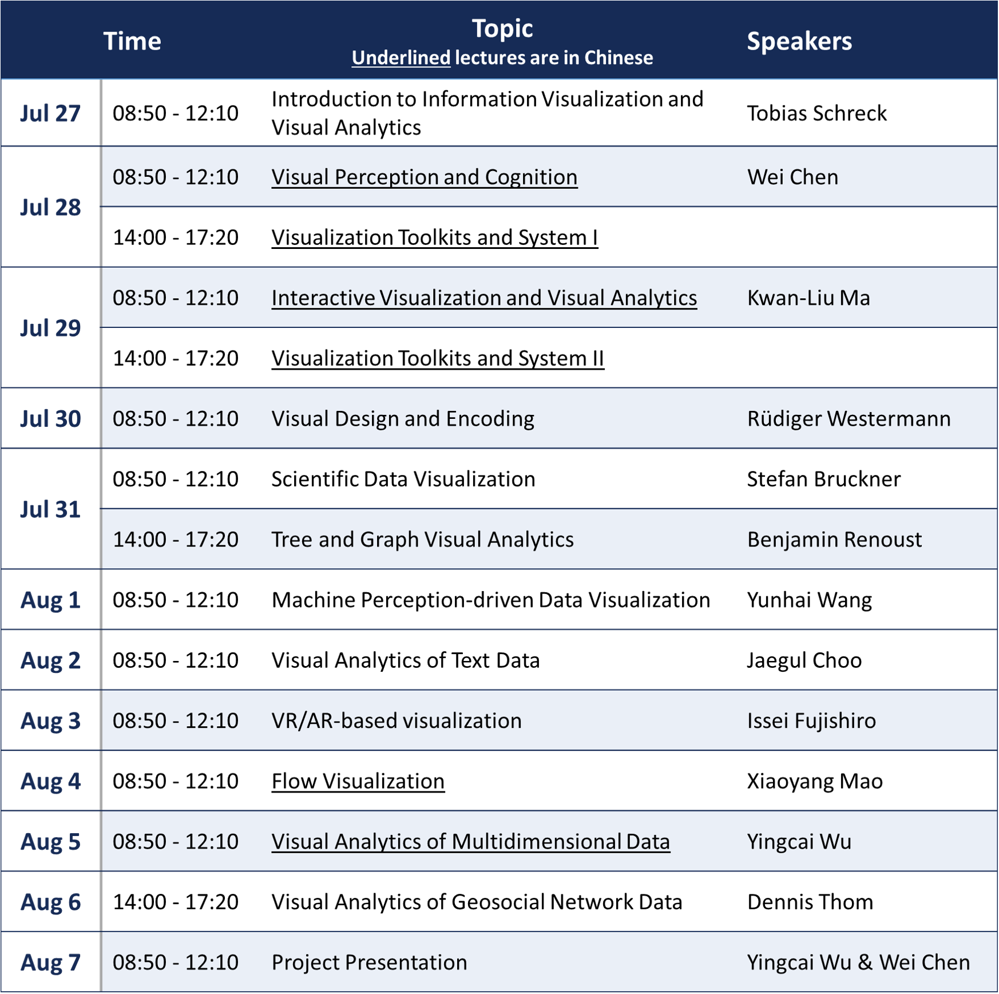

Data Visualization
Table of Contents
- 1. References
- 2. Program
- 3. Tools
- 4. How do people use visualization?
- 5. Provenance
- 6. Visual Interaction Techniques
- 7. A well-designed interactive visualization interface should show the following
- 8. Visual Design and Encoding - Westermann
- 9. Scientific Data Visualization - Stefan Bruckner
- 9.1. Types of Visualization
- 9.2. Data Representation
- 9.3. Grids
- 9.3.1. Regular Grid
- 9.3.2. Rectilinear Grid
- 9.3.3. Curvilinear Grid
- 9.3.4. Block-structured Grid
- 9.3.5. Unstructured Grid
- 9.3.6. TODO Other Grids SUMMARY OF GRID TYPES
- 9.3.7. Scattered Data
- 9.3.8. Data Enhancement
- 9.3.9. Data, Visualization, Interaction
- 9.3.10. Interactive Steering
- 9.3.11. Volume Visualization
- 9.3.12. Challenges
- 9.3.13. Voxels vs Cells
- 9.3.14. Linear Interpolation
- 9.3.15. Evaluating Quality of Reconstruction
- 9.3.16. Classification
- 9.3.17. Visualization Approaches
- 9.3.18. TODO Isosurface Similarity
- 9.3.19. Visualization in the Spatial Domain
- 9.3.20. Indirect Volume Rendering
- 9.4. Flow Visualization
- 10. Data Visualization of Text Data - Jaegul Choo
2 Program

3 Tools
4 How do people use visualization?
- verification
- analysis
- exploration/discovery
- presentation/storytelling
- art/aesthetics
5 Provenance
The steps the user take in the process of visual exploration/analysis and the resulting visualizations and findings
We use provenance for:
- recall
- reuse and replicate
- Sharing
- Meta-analysis
Capture:
- datasets
- visualization and insight
- interaction
6 Visual Interaction Techniques
- Selecting/Highlighting/Brushing
- Using Lasso to update linked views
- sidebars for interactive filtering
7 A well-designed interactive visualization interface should show the following
- Visualize
- use effective visual encodings
- Filter
- reduce visible data to relevant items
- Select
- Retrieve details about interesting items
- Navigate
- Pan, zoom, change view
https://github.com/juba/scatterD3 DeepTree http://www.visualcomplexity.com/vc/
8 Visual Design and Encoding - Westermann
The purpose of visualization is insight, not pictures. - Schneiderman
8.1 Why use Interactivity?
- Handle data complexity
- A single static view can show only one aspect of data
Overview first, zoom and filter, then details-on-demand
8.2 Why depend on vision?
- Visual system is high-bandwidth channel to brain
8.3 Pre-attentive Processing
- Sequential vs. Parallel processing (popout)
- Combination of channels usually requires serial search
- Difficult if no unique visual property of the target
8.4 Gestalt Principles

Representations should be correct, accurate and truthful.
To bring up a change, you must attend to it. (Change blindness)
8.5 Visual Design
A good visualization depends on:
- data types
- context of the data
- tasks to perform e.g. identify trends
- questions to answer
- messages to deliver
Bad visualizations do not allow you to recover original data from the visualization. Keep proportions and relative sizes.
maximize data-ink ratio
8.5.1 Steven's Psychological Power Law
https://en.wikipedia.org/wiki/Stevens's_power_law
 Steven's psychophysical power law:
Steven's psychophysical power law:
Compensating for human's over/underestimation:

Difficult to focus on one channel when multiple channels are presented. (Redudancy is bad!)
Visual mapping - Separable vs integral visual channels
- Color + position
- Color + size
- Width + height
- Red + green* Unfiled
- https://en.wikipedia.org/wiki/Tutte_embedding
- Reingold-Tilford Algorithm
9 Scientific Data Visualization - Stefan Bruckner
9.1 Types of Visualization
- Volume Visualization
- Visualization of scalar fields
- Important in medicine, biology, geoscience, engineering, …
- Flow Visualization
- Visualization of Vector Fields
- Data typically from computational fluid dynamics (CFD) simulations
9.2 Data Representation
- Inherent Spatial Domain?
- Yes: Do we recycle data space or not
- No: Select which representation space
- What dimension is used for what?
- Relationship data space <=> data attributes
- Available display space (2D/3D)
- Where is the focus?
- Where can you abstract?
9.3 Grids
- Common way of storing datasets of field type (scalar, vector, tensor fields)
- Typically a high-performance, space-efficient representation
- Data is organized in cells which contain samples.
- Often used to define an interpolation function that defines data values between samples leading to a continuous representation.
- Which data orginazation is optimal?
- Where does the data come from?
- Is there an explicit neighbourhood relationship?
- How is the neighborhood information stored?
- How is navigation within the data possible?
- Calculations within the data possible?
- Are the data structured?
9.3.1 Regular Grid
- Orthogonal, equidistant grid
- Sample distances not equal
- Implicit neighborhood-relationship
9.3.2 Rectilinear Grid
- Orthogonal grid
- Varying sample distances (\(x[i], y[j]\) given)
- Allows you to place more samples in areas that are more important to you, not wasting storage in uninterested areas
9.3.3 Curvilinear Grid
- Non-orthogonal grid
- Grid-points explicitly given (\(x[i,j]\))
- Implicit neighborhood relationship
9.3.4 Block-structured Grid
- Combination of structured grids
9.3.5 Unstructured Grid
- Grid-points and connections arbitrary
- Grid-points and neighborhood explicitly given
- Cells: tetrahedra
9.3.6 TODO Other Grids SUMMARY OF GRID TYPES
- Non-cartesian Coordinates
9.3.7 Scattered Data
- Grid-free data
Interesting to look at dimensionality of data space, vs dimensionality of data attributes
9.3.8 Data Enhancement
- Filtering
- Resampling
- Data derivation
- Data interpolation
9.3.9 Data, Visualization, Interaction
- Coupling varies considerably
- Data Generation (data acquisition)
- Mesaurement, simulation, modelling
- Can take very long, and be very costly
- Visualization (rest of visualization pipeline)
- Data enhancement, viz mapping, rendering
- Depending on implementation, fast/slow
- Interaction
- How can the user intervene, vary parameters
- Data Generation (data acquisition)
9.3.10 Interactive Steering
- Simulation and modelling generate data "on the fly"
- Allows real-time insight of the data
- User can interfere with the simulation, and change the design of the simulations
9.3.11 Volume Visualization
- the visualization of 3D scalar fields
- Mapping 3D -> 2D
- Projection (e.g. MIP), slicing, volume rendering
- Volume data is 3Dx1D data
- Scalar data, 3D data space, space filling
- User wants to gain insight into 3D data, find structures of special interest + context
9.3.11.1 Organization of Volume Data
- Cartesian or Regular grid
- CT/MR, often dx=dy<dz
- Data enhancement: iso-stack-calculation
- Curvilinear, unstructured grid
9.3.12 Challenges
- So much information, so few pixels
- How to identify and enhance relevant features in the data.
- Speed and interaction very important
9.3.13 Voxels vs Cells
- pixels = picture element, voxels = volume element
- A voxel is a point sample in 3D, not necessarily interpolated
- Cell is a cube primitive, and the corners are 8 voxels. Values in cell use interpolation.
9.3.14 Linear Interpolation
- Current GPUs automatically do trilinear interpolation of 3D textures
9.3.15 Evaluating Quality of Reconstruction
- Marshner-Lobb function is a common test signal to evaluate the quality of reconstruction filters
- Signal has a high amount of energy near its Nyquist frequency
9.3.16 Classification
- Using data values, gradiant and curvature, segment data into multiple semantic regions
- Often semi-automatic or fully manual
- Automatic approximation: transfer functions
- Simplest example of 1D transfer function: data value -> color
9.3.17 Visualization Approaches
- Slicing
- display of 2D cross sections
- Indirect Volume Rendering
- Extraction of an intermediate representation
- Direct Volume Rendering
- Direct display of representation
9.3.18 TODO Isosurface Similarity
9.3.19 Visualization in the Spatial Domain
9.3.19.1 Slicing
- Reduce the dimensionality of 3D t o2D by showing a cross section
- Usually without a transfer function
- Orthogonal slicing often used to slice along anatomical planes in medical imagery
- Oblique slicing has arbitrary slice orientation, often used in an multi-planar reformation (MPR) setup.
- Curved slices often tailored towards specific applications, e.g. visualization of blood vessels.
9.3.19.2 Direct Volume Rendering
- Dense representation of underlying scalar field: transfer function defines visible structure.
- Image order (ray casting) fast and easy to implement, and are well supported by current GPUs
- Object order (splatting, texture slicing) also supported by older GPUs, but difficult to skip non-visible regions. Easy to skip…(?)
- Nowadays: shading/classification after interpolation/resampling
- post/pre-interpolative classification order
9.3.19.3 Ray Tracing vs Ray Casting
- Ray tracing
- method from image generation, usig ray-object intersection and tracing secondary rays.
- Ray casting
- no objects, density values in 3D, only viewing rays.
9.3.19.4 Shading
- lambertian reflection
- light reflected equally in all directions
- specular reflection
- light reflected more in one direction
Make structures in volume data sets more realistic by applying an illumination model
- Shade each sample in the volume like a surface: Blinn-Phong illumination model commonly used.
- Use normalized gradient vector as estimation for surface normal.
9.3.20 Indirect Volume Rendering
- Extract an intermediate representation from the volume (geometric surface), then use traditional rendering methods
- Cuberille regards each xovel as a little cube, classify as either part of the object or not.

Marching Cubes is a standard method for the extraction of isosurfaces from volume data
9.4 Flow Visualization
- Airplane/ship/car design
- Weather simulation
- Medicine (blood flows etc.)
- Gaseous, liquid flow
- Flow models: Differential Equation Systems (ODEs)
- Common techniques for solving Navier-Stokes equations:
- Lagrangian approach (particle-based)
- Treat the fluid as discrete particles, and apply interaction forces.
- Pros: momentum conservation/more intuitive, and fast, no linear equation solving
- Cons: connectivity information/surface reconstruction
- Eulerian approach
- Discretize the domain using finite differences
- Use the operator splitting technique to solve each term separately
- Pros: derivative approximation, adaptive time step/solver
- Cons: memory usage & speed, grid artifact/resolution limitation.
- Lagrangian approach (particle-based)
10 Data Visualization of Text Data - Jaegul Choo
10.1 Overview
- Vector encoding techniques of text
- Bag-of-words vectors and word embedding
- Basic text visualization techniques
- Word cloud, wordle, word tree, phrase nets, ThemeRiver
- Topic Modeling
- Non-negative matrix factorization
- UTOPIAN and visual analytic systems
- Dimension reduction
- Multidimensional scaling and tSNE
- Interactive dimension reduction techniques and systems
- Interactive visualization of deep learning
- Toolkits: Tensorboard, Embedding Projector, Visdom
- Advanced visual analytics systems: CNNVis, LSTMVis, DeepEyes